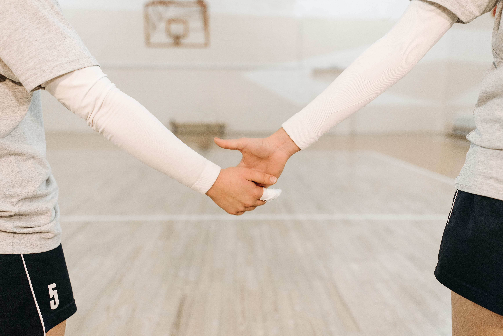

Become A Volunteer
At Sporting Spirits, we believe that sports, particularly volleyball, can be a powerful vehicle for the positive development of youth. We are dedicated to providing low-income youth with opportunities to engage in sports, build essential life skills, and improve their overall well-being. One key aspect of our mission is establishing partnerships with schools and community centers. These partnerships offer a crucial platform for local youth to access quality sports programs. We recognize the importance of a safe and supportive environment for young individuals to explore their athletic potential, develop teamwork skills, and foster a sense of belonging